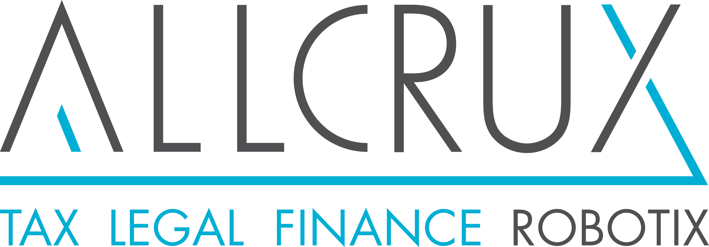

-


client login | info@allcrux.com | +352 691 138 651
Allcrux CorpWare
Robotic Automation for Investment Structures
for whom?
For every organization that manages a large portfolio of entities (SPV or other), whether as a multinational company, an asset manager or as a professional services provider (lawfirms, accounting firms,…).
Real Estate fund managers and developers
Real estate assets defined as a specific entity type, predefined holding and financing arrangements...
Private
Equity
Facilitate typical PE structures through pre-populated types of instruments and entities (Trusts, LPs, various types of loans, fiduciary arrangements,...). Set up the deal financing structure in bespoke deal modules. Create tags for the different roles various vehicles play in the overall acquisition (feeders, access, management incentive plans,...)
Corporate
Multinationals
Define individual structures per industry type / operational (sub)division. Main company types for some 60 countries predefined and generic framework for adding more. Allow visualization of structures and functionality to a degree of granularity that includes non-entity types of assets, such as production sites, logistic facilities, treasury instruments etc...
Professional service providers
We are open to collaborations with various professional service providers, either through joint offerings or as subcontractors under the brand of our partners.
Dynamic Structure Charts
Algorithm based rendering of structure charts. Carving out relevant entities from the overall universe. Use smart and predefined views with highlighting features to focus on what is relevant. Calculate and show trails to ultimate beneficial owners.
Access additional functionality, documents and information pertaining to specific entities from within the structure charts.
Automatic embedding of structure charts in (legal) documentation, TP studies,...
Legal Entity Management (LEM)
Automated administration of legal entities, but tailored for investment management and international holding activities. Comprehensive functionality supports all corporate housekeeping at entity level plus functionality that supports group-wide legal processes.
- Cap tables generated on the basis of detailed transaction data that can either be imported from any source or entered via the Allcrux User Interface.
- Generate shareholder registers, bond registers etc from the cap tables.
- Follow the evolution of various agreements between group entities and support admin follow up thereof with robotized documentation.
- Keep track of board mandates, auditor appointments,...
- Schedule meetings with automatic invites and presence tracking
In Allcrux LEM provides the basis for synergies between legal, tax and financial business processes.
Finance
Allcrux Corpware is all about numbers. We allow to upload trial balances as well as specific KPI's and then provide for a framework that allows using these numbers for calculations and/or automatically generated documentation.
So here's what we do on the accounting front:
- trial balances upload
- tracking and identifying various cash flows
- (interco) loan calculations and follow up on nominal, compounding and interest payments
- status of equity instruments, share premium,...
- support e-filing of accounts, generate XML-files, mapping configurations between charts of accounts,...
- documenting approval of the annual accounts, generate content for notes to the accounts
- generate documentation regarding distributions, compliance with covenants, payment triggering events for derivatives,...
"Allcrux is unique in the sense that it truly creates integration between tax, legal and financial processes"
Tax (including TP)
With legal aspects and numbers on board, the next logical step is to automate tax processes. The degree of automation is always function of the complexity of the underlying data. Nevertheless, we can automate the most mind numbing aspects and provide for efficient and targeted archiving.
- generate various types of tax returns to various degrees of completion and automation (CTX, WHT,... with some countries done and others in progress)
- FATCA/CRS: listing all equity and debt claim holders for reporting entities and controlling persons for passives. Report beneficial owners and debt claim holders. US forms and self-certifications are automatically created (e.g. automated W8 BEN-E generation)
- Transfer Pricing: automated benchmark studies for (back to back) financing and automatically generated TP reports.
- compliance: follow-up on due dates, filings, automated notifications
- calculations configure calculations and reports for CFC, debt/equity ratio, acquisition and distribution dates, % held, tax status of receiving entities
One-Click Due Diligence
Replicate all data embedded in a structure, select what needs to be made available and export it to various formats for easy upload into any due diligence process.
Be ready at all times for your (vendor) due diligence.
Automatic Versioning
Snapshots of both the structure charts and a timestamped report are generated after every transaction. This allows to always recreate the situation as it was at a given time in the past. Answer requests from auditors and authorities about an entity's history with confidence and accuracy.
Focused - Diverse - Disruptive
Digital Hybrid
Investment structuring and maintenance is not a fully formalized process and is therefore not completely digital. We digitize where it makes sense and bridge to the paper and external world where needed.
Reliable
We've selected proven technologies that are ready for the 2020 era. You can choose between in house deployments or state-of-the art cloud deployments for the highest level of compliance and security.
Unique
We formalized the domain in a deep and consistent manner across various fields and bring together Tax, Legal and Financial concerns.
Enhanced Data Quality
The byproduct of implementing Allcrux is feedback that is useful for data cleaning. The byproduct of using Allcrux on a going concern basis is solid data governance.

API first design
We understand our solution needs to integrate with existing solutions that are already in place. We have an API first design, providing modern API interfaces and extensive import and export capabilities.